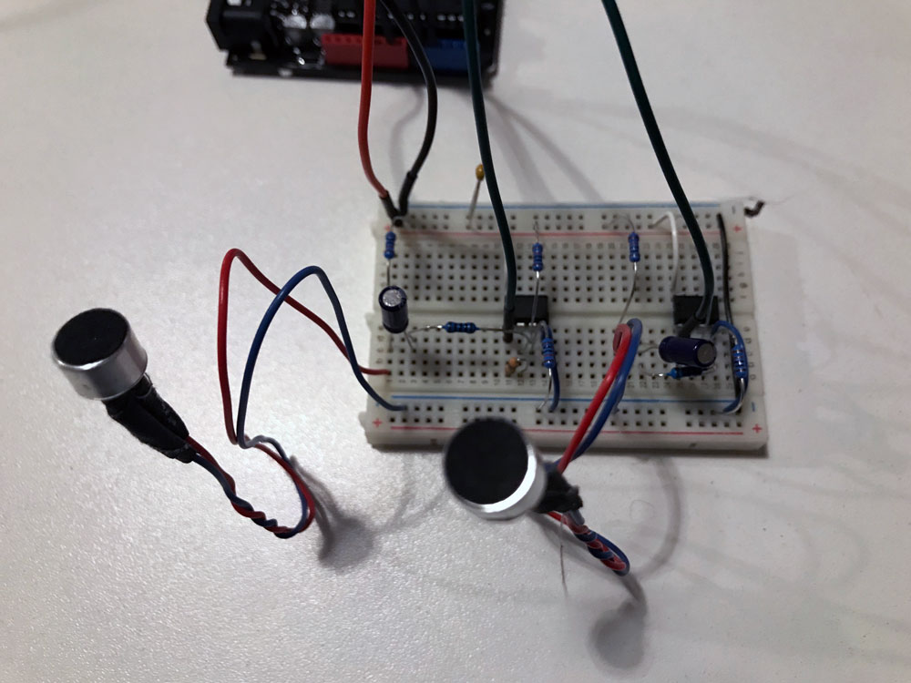

Week 6: Visual Talk Seesaw [LAB]
Oct 16, 2018
For this week's serial communication lab, I made a visual version of the Talk Seesaw that I made for week 4's lab. Below is the screen capture of the visualization.
I made two sets of operational amps, that I built for last week's lab, for each of the microphones. Then I am sending the raw analogRead values from each of the microphones from the Arduino to the p5 web editor through serial communication. I am sending the two values in the format of "firstValue, secondValue" so that on the p5 side, I can split the values where the comma character is. The values are received using the readLine() function rather than read() in order to consider the new line character as the next data input from the Arduino.
The code is available this p5 web editor file. The Arduino code is also included in the sketch.js file as comments at the bottom.